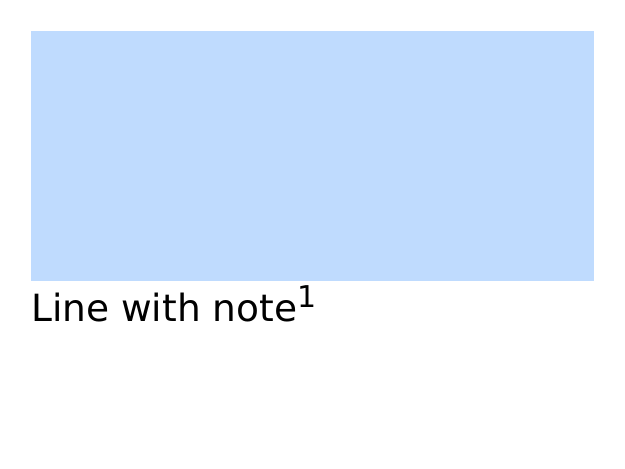
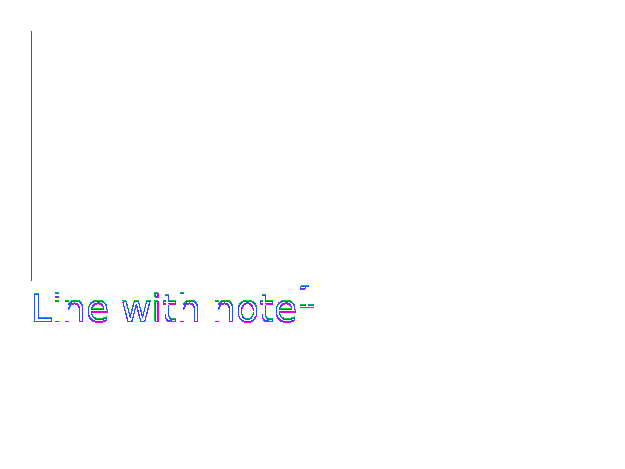
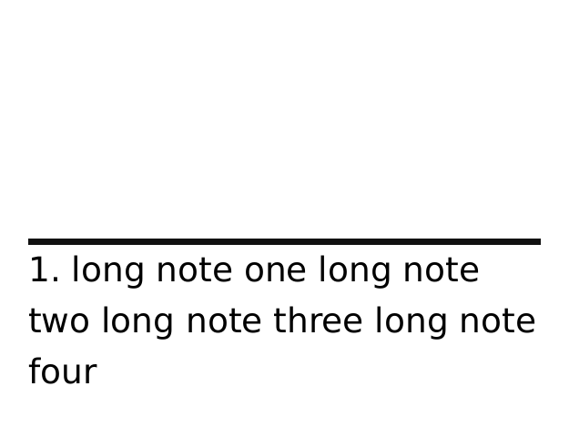

REFERENCE-DISPUTED 6027 px · above-floor 1.81% · raw 2.06% max-page diff paged-footnote-max-height · area-max-height · oracle: weasyprint · REFERENCE DISPUTED · 2 pagesMissingmissing 5.1%extra 5.1%ΔE 21.3
page 1


page 2

why: page 2: candidate lacks paint present in reference (5.1%)
@footnote max-height is constrained when a page has body content, but GCPM exempts a footnote-only last page. The standards-derived reference preserves the full final footnote body rather than WeasyPrint 69's clipped output.
reference dispute: CSS GCPM limits the footnote area with max-height except on a page containing only footnotes, and footnote-policy:auto permits the body to move to a later page. Both PDFs keep the call on page 1, move the complete body to the footnote-only page 2, and preserve the same three-line wrapping and rule geometry. Every body line in the WeasyPrint PDF is uniformly 0.1157pt lower; horizontal word bounds differ by at most 0.028pt. That renderer-specific baseline and glyph quantization is not prescribed by GCPM, so the WeasyPrint PDF is not a unique pixel oracle; raw shared-pdftoppm evidence remains reported.
regions (1206 total; showing 64 representatives)
Complete dominant-class aggregates
| class | regions | pixels | union bbox (CSS px) | largest px | maximum magnitude |
|---|---|---|---|---|---|
| ColorErr | 584 | 4596 | 0,0 → 180,51 | 569 | total 5.1% · largest 0.6% |
| Extra | 302 | 715 | 0,24 → 178,50 | 11 | total 0.8% · largest 0.01% |
| Missing | 320 | 716 | 0,27 → 178,51 | 15 | total 0.8% · largest 0.02% |
Representative region details (worst-first)
| class | bbox (CSS px) | area% | magnitude | reason |
|---|---|---|---|---|
| AntialiasCoverage | 0,0 → 180,2 | 0.6 | ΔRGB(-154,-154,-154) | antialiasing coverage residue on a shared outline |
| AntialiasCoverage | 44,27 → 50,33 | 0.1 | ΔRGB(4,4,4) | antialiasing coverage residue on a shared outline |
| AntialiasCoverage | 141,27 → 147,33 | 0.1 | ΔRGB(4,4,4) | antialiasing coverage residue on a shared outline |
| AntialiasCoverage | 1,25 → 4,31 | 0.04 | ΔRGB(-4,-4,-4) | antialiasing coverage residue on a shared outline |
| AntialiasCoverage | 71,25 → 75,31 | 0.04 | ΔRGB(-4,-4,-4) | antialiasing coverage residue on a shared outline |
| AntialiasCoverage | 87,25 → 90,31 | 0.04 | ΔRGB(-4,-4,-4) | antialiasing coverage residue on a shared outline |
| AntialiasCoverage | 167,25 → 171,31 | 0.04 | ΔRGB(-4,-4,-4) | antialiasing coverage residue on a shared outline |
| AntialiasCoverage | 34,8 → 36,15 | 0.04 | ΔRGB(3,3,3) | antialiasing coverage residue on a shared outline |
| AntialiasCoverage | 121,8 → 123,15 | 0.04 | ΔRGB(3,3,3) | antialiasing coverage residue on a shared outline |
| AntialiasCoverage | 1,7 → 3,14 | 0.03 | ΔRGB(-4,-4,-4) | antialiasing coverage residue on a shared outline |
| AntialiasCoverage | 16,31 → 20,33 | 0.03 | ΔRGB(-1,-1,-1) | antialiasing coverage residue on a shared outline |
| AntialiasCoverage | 31,31 → 34,33 | 0.03 | ΔRGB(-1,-1,-1) | antialiasing coverage residue on a shared outline |
| AntialiasCoverage | 65,31 → 68,33 | 0.03 | ΔRGB(-1,-1,-1) | antialiasing coverage residue on a shared outline |
| AntialiasCoverage | 127,31 → 131,33 | 0.03 | ΔRGB(-1,-1,-1) | antialiasing coverage residue on a shared outline |
| AntialiasCoverage | 161,31 → 164,33 | 0.03 | ΔRGB(-1,-1,-1) | antialiasing coverage residue on a shared outline |
| AntialiasCoverage | 6,49 → 10,51 | 0.03 | ΔRGB(-1,-1,-1) | antialiasing coverage residue on a shared outline |
| AntialiasCoverage | 38,27 → 41,28 | 0.03 | ΔRGB(-19,-19,-19) | antialiasing coverage residue on a shared outline |
| AntialiasCoverage | 57,27 → 60,28 | 0.03 | ΔRGB(-19,-19,-19) | antialiasing coverage residue on a shared outline |
| AntialiasCoverage | 93,27 → 96,28 | 0.03 | ΔRGB(-19,-19,-19) | antialiasing coverage residue on a shared outline |
| AntialiasCoverage | 134,27 → 138,28 | 0.03 | ΔRGB(-19,-19,-19) | antialiasing coverage residue on a shared outline |
| AntialiasCoverage | 153,27 → 156,28 | 0.03 | ΔRGB(-19,-19,-19) | antialiasing coverage residue on a shared outline |
| AntialiasCoverage | 17,44 → 18,51 | 0.03 | ΔRGB(4,4,4) | antialiasing coverage residue on a shared outline |
| AntialiasCoverage | 30,9 → 31,15 | 0.03 | ΔRGB(4,4,4) | antialiasing coverage residue on a shared outline |
| AntialiasCoverage | 49,9 → 50,15 | 0.03 | ΔRGB(4,4,4) | antialiasing coverage residue on a shared outline |
| AntialiasCoverage | 87,9 → 89,15 | 0.03 | ΔRGB(4,4,4) | antialiasing coverage residue on a shared outline |
| AntialiasCoverage | 116,9 → 118,15 | 0.03 | ΔRGB(4,4,4) | antialiasing coverage residue on a shared outline |
| AntialiasCoverage | 135,9 → 137,15 | 0.03 | ΔRGB(4,4,4) | antialiasing coverage residue on a shared outline |
| AntialiasCoverage | 76,27 → 80,29 | 0.03 | ΔRGB(-56,-56,-56) | antialiasing coverage residue on a shared outline |
| AntialiasCoverage | 105,27 → 108,29 | 0.03 | ΔRGB(-56,-56,-56) | antialiasing coverage residue on a shared outline |
| AntialiasCoverage | 112,27 → 116,29 | 0.03 | ΔRGB(-56,-56,-56) | antialiasing coverage residue on a shared outline |
| AntialiasCoverage | 173,27 → 177,29 | 0.03 | ΔRGB(-56,-56,-56) | antialiasing coverage residue on a shared outline |
| AntialiasCoverage | 2,45 → 4,51 | 0.03 | ΔRGB(4,4,4) | antialiasing coverage residue on a shared outline |
| AntialiasCoverage | 40,8 → 40,15 | 0.02 | ΔRGB(4,4,4) | antialiasing coverage residue on a shared outline |
| AntialiasCoverage | 127,8 → 127,15 | 0.02 | ΔRGB(4,4,4) | antialiasing coverage residue on a shared outline |
| AntialiasCoverage | 76,29 → 82,31 | 0.02 | ΔRGB(115,115,115) | antialiasing coverage residue on a shared outline |
| AntialiasCoverage | 105,29 → 110,31 | 0.02 | ΔRGB(115,115,115) | antialiasing coverage residue on a shared outline |
| AntialiasCoverage | 112,29 → 117,31 | 0.02 | ΔRGB(115,115,115) | antialiasing coverage residue on a shared outline |
| AntialiasCoverage | 173,29 → 178,31 | 0.02 | ΔRGB(115,115,115) | antialiasing coverage residue on a shared outline |
| AntialiasCoverage | 77,27 → 80,27 | 0.02 | ΔRGB(-21,-21,-21) | antialiasing coverage residue on a shared outline |
| AntialiasCoverage | 105,27 → 108,27 | 0.02 | ΔRGB(-21,-21,-21) | antialiasing coverage residue on a shared outline |
| AntialiasCoverage | 112,27 → 116,27 | 0.02 | ΔRGB(-21,-21,-21) | antialiasing coverage residue on a shared outline |
| AntialiasCoverage | 173,27 → 177,27 | 0.02 | ΔRGB(-21,-21,-21) | antialiasing coverage residue on a shared outline |
| AntialiasCoverage | 77,32 → 81,33 | 0.02 | ΔRGB(-91,-91,-91) | antialiasing coverage residue on a shared outline |
| AntialiasCoverage | 105,32 → 109,33 | 0.02 | ΔRGB(-91,-91,-91) | antialiasing coverage residue on a shared outline |
| AntialiasCoverage | 113,32 → 117,33 | 0.02 | ΔRGB(-91,-91,-91) | antialiasing coverage residue on a shared outline |
| AntialiasCoverage | 173,32 → 178,33 | 0.02 | ΔRGB(-91,-91,-91) | antialiasing coverage residue on a shared outline |
| AntialiasCoverage | 45,34 → 49,35 | 0.02 | ΔRGB(57,57,57) | antialiasing coverage residue on a shared outline |
| AntialiasCoverage | 141,34 → 145,35 | 0.02 | ΔRGB(57,57,57) | antialiasing coverage residue on a shared outline |
| AntialiasCoverage | 0,45 → 1,51 | 0.02 | ΔRGB(-4,-4,-4) | antialiasing coverage residue on a shared outline |
| AntialiasCoverage | 12,26 → 14,28 | 0.02 | ΔRGB(-4,-4,-4) | antialiasing coverage residue on a shared outline |
| AntialiasCoverage | 12,44 → 14,49 | 0.02 | ΔRGB(-4,-4,-4) | antialiasing coverage residue on a shared outline |
| AntialiasCoverage | 36,9 → 39,11 | 0.02 | ΔRGB(4,4,4) | antialiasing coverage residue on a shared outline |
| AntialiasCoverage | 123,9 → 125,11 | 0.02 | ΔRGB(4,4,4) | antialiasing coverage residue on a shared outline |
| AntialiasCoverage | 32,9 → 32,15 | 0.02 | ΔRGB(-4,-4,-4) | antialiasing coverage residue on a shared outline |
| AntialiasCoverage | 51,9 → 51,15 | 0.02 | ΔRGB(-4,-4,-4) | antialiasing coverage residue on a shared outline |
| AntialiasCoverage | 89,9 → 90,15 | 0.02 | ΔRGB(-4,-4,-4) | antialiasing coverage residue on a shared outline |
| AntialiasCoverage | 119,9 → 119,15 | 0.02 | ΔRGB(-4,-4,-4) | antialiasing coverage residue on a shared outline |
| AntialiasCoverage | 138,9 → 138,15 | 0.02 | ΔRGB(-4,-4,-4) | antialiasing coverage residue on a shared outline |
| AntialiasCoverage | 36,12 → 39,14 | 0.02 | ΔRGB(4,4,4) | antialiasing coverage residue on a shared outline |
| AntialiasCoverage | 123,12 → 125,14 | 0.02 | ΔRGB(4,4,4) | antialiasing coverage residue on a shared outline |
| AntialiasCoverage | 1,32 → 4,33 | 0.02 | ΔRGB(-3,-3,-3) | antialiasing coverage residue on a shared outline |
| AntialiasCoverage | 72,32 → 75,33 | 0.02 | ΔRGB(-3,-3,-3) | antialiasing coverage residue on a shared outline |
| AntialiasCoverage | 87,32 → 90,33 | 0.02 | ΔRGB(-3,-3,-3) | antialiasing coverage residue on a shared outline |
| AntialiasCoverage | 168,32 → 171,33 | 0.02 | ΔRGB(-3,-3,-3) | antialiasing coverage residue on a shared outline |
source · cases/paged-media/paged-footnote-max-height.html
1<!DOCTYPE html>
2<html><head><meta charset="utf-8"><title>footnote area max height</title><style>
3@page{size:200px 150px;margin:10px;@footnote{max-height:30px;border-top:2px solid #111}}
4html{font-family:ParitySans;line-height:1.5;font-size:12px}
5*{margin:0;box-sizing:border-box}
6.lead{height:80px;background:#bfdbfe}.fn{float:footnote}
7</style></head><body><div class="lead"></div><p>Line with note<span class="fn">long note one long note two long note three long note four</span></p></body></html>